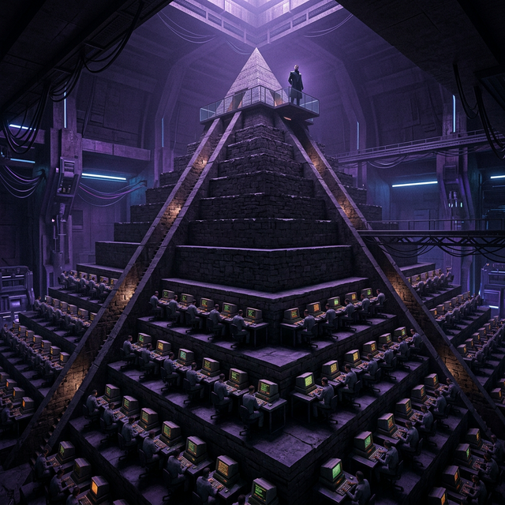
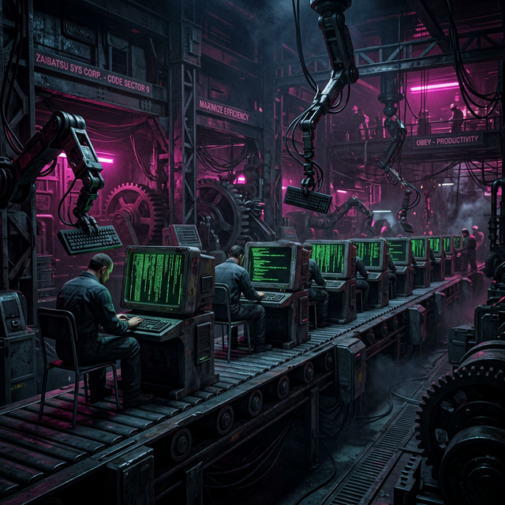

Yönetim Yaklaşımları:
Hiyerarşi
ve Etik
Piramit, Taylorizm ve Çevik Dönüşüm
Piramidin Zirvesi
Geleneksel (Klasik) yönetim, organizasyonu bir makine, insanı ise bu makinenin bir dişlisi olarak görür.

Klasik Organizasyon
Düşünenler (Yönetim)
üstte,
Uygulayanlar
(İşçiler) altta.
"Yazılım Fabrikası" Modeli
Bu üç temel kavram bilişim sektörüne uygulandığında, yaratıcı yazılım süreci sıradan bir üretim bandına dönüştürülmeye çalışılır.

Metrik Fetişizmi
Günde kaç satır kod? Kaç ticket kapatıldı? Nitelik yerine niceliğin ve sürekli ölçülebilirliğin kutsanması.
Katı Emir-Komuta
Kararlar üst yönetimde alınır. Yazılımcı sadece verilen özellikleri (feature) sorgulamadan koda dökmekle mükelleftir.
Aşırı İş Bölümü
Mimar tasarlar, back-end'ci yazar, QA test eder. Kimse ürünün veya sorunun sağladığı büyük resmi göremez.
Bilişimde Neden Çalışmıyor?
İnsansızlaşma
İnsanın yaratıcı potansiyelinin yok sayılması ve sadece "İnsan Kaynağı" (Dişli) olarak görülmesi.
Esneklik Kaybı
Hızla değişen teknoloji dünyasında, hantal ve yavaş bürokratik karar alma süreçleri.
Motivasyon Çöküşü
Sadece dışsal ödül (maaş) odaklılık, içsel motivasyonu ve "Flow" (Akış) halini öldürür.
Bilgi Siloları
Departmanlar arası duvarlar. Bilginin hiyerarşik basamaklarda kaybolması veya filtrelenmesi.
Alternatif Çözüm: Agile
Piramitten Ağa
- Kendi Kendini Yöneten Takımlar: Emre itaat eden değil, problem çözen otonom ekipler.
- İteratif Geliştirme: Katı planlar yerine değişime anında yanıt verebilme.
- İletişim Odaklılık: Süreçler ve araçlardan ziyade, bireyler ve etkileşimler değerlidir.
Etik Açıdan Piramit
Sorumluluk Dağılması
Yetersiz Yetki (Eichmann Etkisi)
Katı hiyerarşik yapılar, bireylerin etik sorumluluklarını bir üst makama devretmesine neden olur. Kimse bütünden sorumlu hissetmez, herkes sadece kendi "kod parçasından" sorumludur. Bu durum büyük etik faciaların temel sebebidir.
Karakterin Testi
İK için bir CV Eleme YZ Modeli geliştiriyorsunuz. Eğitim verisinde kadın adaylara karşı ciddi bir algoritmik önyargı tespit ettiniz.
Müdürünüz: "Önceliğimiz değil! Plana sadık kal, deadline yarın."
Hiyerarşiye Uy
"Emir emirdir. Sorumluluk yöneticidedir."
Etik İtiraz Yap
"Yanlı sistem teslim edemem. Etik kurallar üstündür!"
Haftaya Bakış
Sıradaki Konu: Fikri Mülkiyet Hukuku ve Etik
BU HAFTA NE ÖĞRENDİK?
Geleneksel Yapı
Taylorizm & Hiyerarşi
Model Çöküşü
Motivasyon ve Esneklik
Etik Çatışma
Sorumluluk Dağılması
Dijital dünyada gerçekten gizli kalabilir miyiz? Gözetim kapitalizmi.